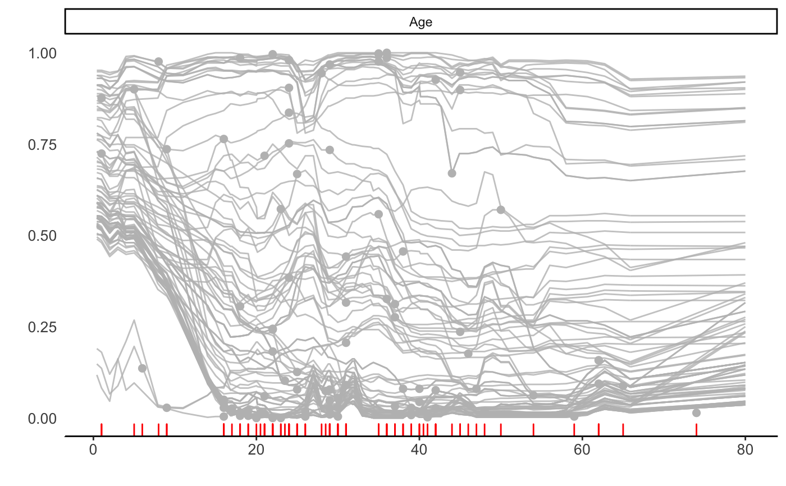
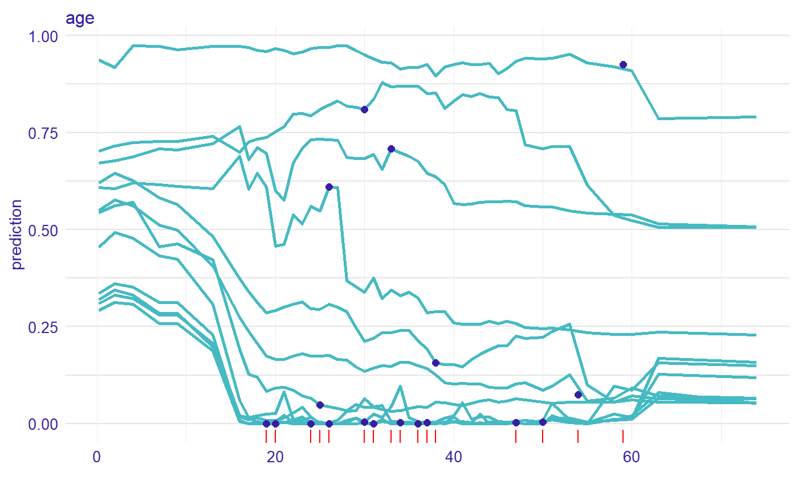

Ceteris Paribus Profiles aka Individual Variable Profiles
This explainer works for individual observations. For each observation it calculates Ceteris Paribus Profiles for selected variables. Such profiles can be used to hypothesize about model results if selected variable is changed. For this reason it is also called 'What-If Profiles'.
ceteris_paribus(x, ...) # S3 method for explainer ceteris_paribus(x, new_observation, y = NULL, variables = NULL, variable_splits = NULL, grid_points = 101, ...) # S3 method for default ceteris_paribus(x, data, predict_function = predict, new_observation, y = NULL, variables = NULL, variable_splits = NULL, grid_points = 101, label = class(x)[1], ...)
Arguments
| x | a model to be explained, or an explainer created with the `DALEX::explain()` function. |
|---|---|
| ... | other parameters |
| new_observation | a new observation with columns that corresponds to variables used in the model |
| y | true labels for `new_observation`. If specified then will be added to ceteris paribus plots. |
| variables | names of variables for which profiles shall be calculated. Will be passed to `calculate_variable_splits()`. If NULL then all variables from the validation data will be used. |
| variable_splits | named list of splits for variables, in most cases created with `calculate_variable_splits()`. If NULL then it will be calculated based on validation data available in the `explainer`. |
| grid_points | number of points for profile. Will be passed to `calculate_variable_splits()`. |
| data | validation dataset. It will be extracted from `x` if it's an explainer |
| predict_function | predict function. It will be extracted from `x` if it's an explainer |
| label | name of the model. By default it's extracted from the 'class' attribute of the model |
Value
An object of the class 'ceteris_paribus_explainer'. It's a data frame with calculated average responses.
Details
Find more details in Ceteris Paribus Chapter.
References
Predictive Models: Visual Exploration, Explanation and Debugging https://pbiecek.github.io/PM_VEE
Examples
library("DALEX") # Toy examples, because CRAN angels ask for them titanic <- na.omit(titanic) model_titanic_glm <- glm(survived == "yes" ~ gender + age + fare, data = titanic, family = "binomial") explain_titanic_glm <- explain(model_titanic_glm, data = titanic[,-9], y = titanic$survived == "yes") cp_rf <- ceteris_paribus(explain_titanic_glm, titanic[1,]) cp_rf#> Top profiles : #> gender age class embarked country fare sibsp parch #> 1 male 42.0000000 3rd Southampton United States 7.11 0 0 #> 1.1 female 42.0000000 3rd Southampton United States 7.11 0 0 #> 11 male 0.1666667 3rd Southampton United States 7.11 0 0 #> 1.110 male 2.0000000 3rd Southampton United States 7.11 0 0 #> 1.2 male 4.0000000 3rd Southampton United States 7.11 0 0 #> 1.3 male 7.0000000 3rd Southampton United States 7.11 0 0 #> _yhat_ _vname_ _ids_ _label_ #> 1 0.1857672 gender 1 lm #> 1.1 0.6711517 gender 1 lm #> 11 0.2452313 age 1 lm #> 1.110 0.2423748 age 1 lm #> 1.2 0.2392846 age 1 lm #> 1.3 0.2347001 age 1 lm #> #> #> Top observations: #> gender age class embarked country fare sibsp parch _yhat_ _label_ #> 1 male 42 3rd Southampton United States 7.11 0 0 0.1857672 lm #> _ids_ #> 1 1library("randomForest") model_titanic_rf <- randomForest(survived ~ gender + age + class + embarked + fare + sibsp + parch, data = titanic) model_titanic_rf#> #> Call: #> randomForest(formula = survived ~ gender + age + class + embarked + fare + sibsp + parch, data = titanic) #> Type of random forest: classification #> Number of trees: 500 #> No. of variables tried at each split: 2 #> #> OOB estimate of error rate: 19.1% #> Confusion matrix: #> no yes class.error #> no 1321 97 0.06840621 #> yes 304 377 0.44640235explain_titanic_rf <- explain(model_titanic_rf, data = titanic[,-9], y = titanic$survived, label = "Random Forest v7")#># select few passangers selected_passangers <- select_sample(titanic, n = 20) cp_rf <- ceteris_paribus(explain_titanic_rf, selected_passangers) cp_rf#> Top profiles : #> gender age class embarked country fare sibsp parch #> 557 male 50 2nd Southampton England 13.0000 0 0 #> 557.1 female 50 2nd Southampton England 13.0000 0 0 #> 660 male 25 3rd Cherbourg Lebanon 14.0901 1 0 #> 660.1 female 25 3rd Cherbourg Lebanon 14.0901 1 0 #> 1535 male 20 restaurant staff Southampton England 0.0000 0 0 #> 1535.1 female 20 restaurant staff Southampton England 0.0000 0 0 #> _yhat_ _vname_ _ids_ _label_ #> 557 0.004 gender 557 Random Forest v7 #> 557.1 0.922 gender 557 Random Forest v7 #> 660 0.048 gender 660 Random Forest v7 #> 660.1 0.528 gender 660 Random Forest v7 #> 1535 0.000 gender 1535 Random Forest v7 #> 1535.1 0.824 gender 1535 Random Forest v7 #> #> #> Top observations: #> gender age class embarked country fare sibsp parch #> 557 male 50 2nd Southampton England 13.0000 0 0 #> 660 male 25 3rd Cherbourg Lebanon 14.0901 1 0 #> 1535 male 20 restaurant staff Southampton England 0.0000 0 0 #> 942 female 59 2nd Southampton United States 26.0000 0 1 #> 491 male 30 2nd Southampton England 13.0000 0 0 #> 1639 male 47 victualling crew Southampton England 0.0000 0 0 #> _yhat_ _label_ _ids_ #> 557 0.004 Random Forest v7 1 #> 660 0.048 Random Forest v7 2 #> 1535 0.000 Random Forest v7 3 #> 942 0.926 Random Forest v7 4 #> 491 0.004 Random Forest v7 5 #> 1639 0.002 Random Forest v7 6plot(cp_rf, variables = "age") + show_observations(cp_rf, variables = "age") + show_rugs(cp_rf, variables = "age", color = "red")